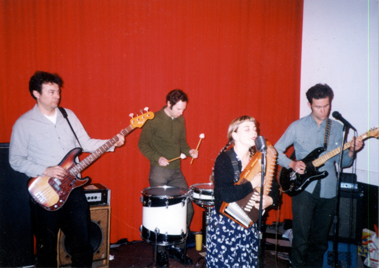
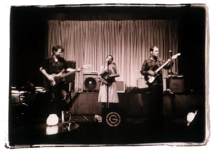
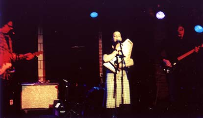

A band from San Francisco. Not playing lately, since we live on opposite coasts.

The band that went to Holland in Spring '95: Greg, Derrall, Mary, Brad

At the Make-Out room in '97, photo by Gail Butensky.

New York
show back in... April 2001? at the Mercury Lounge.
Greg couldn't
make this one, so it's guest bassist James McNew at the left.
In our living room circa 2017: